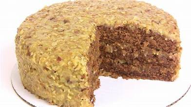

The Classic German Chocolate Cake is a very rich in flavored and for all chocolate lovers very loved.
Classic German Chocolate Cake
Ingredents
FOR THE CAKE
Cooking Spray
- 3 c. all-purpose flour
- 3/4 c. unsweetened cocoa powder
- 1 tsp. kosher salt
- 1 tsp. baking soda
- 1/2 tsp. baking powder
- 1 c. vegetable oil
- 1 c. granulated sugar
- 3/4 c. packed brown sugar
- 3 large eggs
- 4 oz. German chocolate, melted, or another chocolate that is around 48% cocoa
- 1 tsp. pure vanilla extract
- 3/4 c. buttermilk
- 3/4 c. strongly brewed coffee
Filing
- 2 c. sweetened coconut
- 2 c. pecans
- 1 (12-oz.) can evaporated milk
- 4 large egg yolks
- 1/2 c. packed brown sugar
- 1/4 tsp. kosher salt
- 1/2 c. (1 stick) butter, softened and cut into cubes
- 1 tsp. pure vanilla extract
Ganache
THE GANACHE
- ingredents
- 2 c. chocolate chips
- 1 c. heavy cream
Directions
- Step 1
Preheat oven to 350°. Line three 9” cake
pans with parchment and grease with
cooking spray. In a large bowl, whisk
together flour, cocoa powder, salt,
baking soda, and baking powder.
- Step 2
In another large bowl, whisk together
vegetable oil, sugars, and eggs and
whisk until incorporated, then add
melted chocolate and vanilla and whisk
until incorporated. Add chocolate
mixture, buttermilk, and coffee to dry
ingredients and mix just until combined.
- Step 3
Divide batter evenly between prepared
cake pans and bake until a toothpick
inserted in the middle comes out clean,
about 20 minutes. Let cakes cool 10
minutes, then invert onto a wire baking
rack and cool completely.
- Step 4
Meanwhile, make filling: Spread
coconut and pecans onto 2 separate
baking sheets. Toast in a 350° oven until
coconut is golden and pecans are
darkened and smell nutty, stirring
halfway through. Coconut will take 10
to 12 minutes and pecans will need 15
to 18 minutes. Combine into a large bowl.
- Step 5
In a medium saucepan over medium
heat, combine evaporated milk, egg
yolks, sugar, and salt. Whisk until
thickened, 8 to 10 minutes. Sauce
should be able to coat the back of a
wooden spoon and not run when a
finger is swiped through it. Remove from
heat and stir in butter and vanilla until
incorporated. Pour over pecans and
coconut and stir to coat. Let cool
completely. Sauce will continue to thicken as it cools.
- Step 6
Make ganache: Place chocolate chips
into a heat safe bowl. In a small
saucepan over medium heat, warm
heavy cream until bubbles form around
the edges. Pour heavy cream over
chocolate chips and let sit 1 minute,
then whisk until smooth. Let cool until
ganache is thick enough to spread, at least 30 minutes.
- Step 7
Assemble cake: Place one layer of cake
onto a cake stand or serving platter.
Spread ⅓ of ganache on top and then
spread ⅓ of coconut filling on top. Top
with a second layer of cake and repeat
with remaining ganache, coconut filling, and cake.
Nutrition Info
Calories 414 per serving
Saturated Fat 8.5g
Total Fat 24g
Trans Fat 0.3g
Polyunsaturated Fat 6.8g
Monounsaturated Fat 7.3g
Cholesterol 61g
Sodium 151g